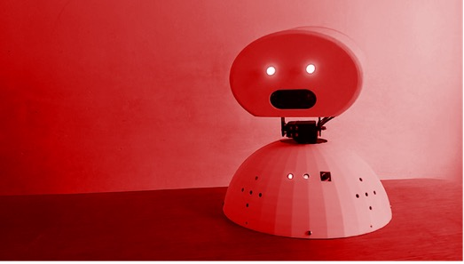

Mental health conditions currently affect
13% of the world's population. Due to the CoronaVirus
pandemic and shelter in place requirements, this is expected to increase in the
future. Although no device known can currently replace human contact and
connection. There needs to be a device that can check on your emotional and
physical wellbeing and help improve it. This can be done with the EVA AI
wellness assistant. The EVA will monitor your health through various sensors
and a camera feed. The device will detect your mood and suggest the most
appropriate action to take for any given situation. If you have been working
too long and require a break, the EVA will prompt you and encourage you to
relax. This is a much-needed device for such a time as this.

The programming language the EVA will
utilize is Python, this is because of its functionality and ease of use with
object-orientated programming. The Raspberry Pi hardware will have Python-based
software which will be implemented. This will allow the EVA to run every time
the Raspberry Pi is turned on.
The EVA wellness assistant runs on the Raspberry
Pi 4 with the following specifications:
Broadcom BCM2711, Quad core Cortex-A72
(ARM v8) 64-bit SoC @ 1.5GHz
2GB, 4GB or 8GB LPDDR4-3200 SDRAM
(depending on model)
2.4 GHz and 5.0 GHz IEEE 802.11ac
wireless, Bluetooth 5.0, BLE
Gigabit Ethernet
2 USB 3.0 ports; 2 USB 2.0 ports.
Raspberry Pi standard 40 pin GPIO header
(fully backward compatible with previous boards)
2 × micro-HDMI ports (up to 4kp60
supported)
2-lane MIPI DSI display port
2-lane MIPI CSI camera port
4-pole stereo audio and composite video
port
H.265 (4kp60 decode), H264 (1080p60
decode, 1080p30 encode)
OpenGL ES 3.1, Vulkan 1.0
Micro-SD card slot for loading operating
system and data storage
5V DC via USB-C connector (minimum 3A*)
5V DC via GPIO header (minimum 3A*)
Power over Ethernet (PoE) enabled
(requires separate PoE HAT)
Operating temperature: 0 – 50 degrees C
ambient
Passive infrared (PIR) motion Sensors
will be added to the EVA to detect how much movement the body is making while
working, studying, or relaxing. This can help detect anxiety/stress and general
wellbeing.
A Webcam will be attached to the
Raspberry Pi interface as well, this will be ideally be situated above the
user's face or in a place where the face can be seen frequently. The EVA
wellness assistant will be placed above the user's workspace where it can
analyze and view the user as effectively as possible. The webcam will help
detect; sleep deprivation, dehydration, mental illness, frequent breaks from
work.
DHT22 sensors will be utilized to monitor
the temperature of your living/working environment, this will help the EVA
detect if your environment needs to be warmer or colder, depending on your mood
and current needs. For example, if you are highly energetic in the present
moment perhaps a slightly cooler atmosphere would help you stay focused. If you
are feeling slightly fatigued a warmer temperature would be healthier for you
in terms of easing your body into a rested state.
An emergency contact list will also be
added into the EVA’s directory where she will be able to dial the person needed
in case of an emergency. The webcam detection software and motion sensors will
be able to detect any erratic movement that may or not be an emergency
situation, EVA will then prompt you if needed, if the prompt is not answered
after a few attempts the EVA will proceed to ring your closest Emergency
contact via Internet phone dialing at Poptox.com.
The User's mood can be detected via
facial recognition software via the Raspberry Pi Camera module utilizing;
OpenCV, TensorFlow, and Keras. This will allow the
EVA to play music or soundtracks depending on your mood to improve and or
enhance your current state.
The EVA will be able to monitor how long
you have been sitting still, using motion sensors and camera attachments. She
will recommend frequent breaks and these settings can be further customized.
The standard of a mini-break every 25 minutes according to the Pomodoro
Technique will be the default system program.
Sleep deprivation has a direct
correlation to mental health and it is proven a lack of sleep can significantly
affect mood and mental faculties. The EVA will be able to sense if you are too
tired to function or if you seriously require rest from the webcam and motion
sensors. Along with grading the scale of your skin’s complexion (especially
around the lip and eye areas) to see if you are adequately hydrated, suggest a
hydration plan as part of the user experience.
If any unusual psychological outbursts
occur, including those that may be part of a current mental condition, The EVA
can detect this and offer help or ring an emergency contact to assist you into
a better mental state.
The technology mentioned above would
require the following software; Python, OpenCV, Tensor Flow, Keras as well as connection to WIFI to function as
intended. The hardware is the Raspberry Pi 4, with the camera module, DH22 heat
sensors, and PIR Infrared motion sensors.
● Python: This is a programming language that can cover a large range of purposes, from small to large-scale projects. It has an object-orientated focus that keeps the coding process simple and easy to comprehend.
● OpenCV: This is a tool for image recognition and processing. It can do facial detection, tracking, and other vision-related tasks with the use of Artificial Intelligence.
● Tensor Flow: Tensor flow is utilized particularly in the training of deep neural networks.
● Keras: Is an open-source Python interface for neural networks.
●
Raspberry Pi: A computer the size of a credit
card developed in the United Kingdom.
●
Camera Module: The Raspberry Pi v2 Camera
Module, has an 8-megapixel sensor and can take still photos as well as video
recordings.
●
DH22 heat sensors: This is a heat and humidity
center that uses a thermistor to measure the qualities of the surrounding air
with a digital output.
●
PIR Infrared motion sensors: Motion sensors
often used to detect human movement, very small and consume little power.
Detecting large warm moving objects accurately and efficiently.
A solid understanding of Artificial Intelligence and Machine
learning would be required with the Python programming language. These skills
can be learned via Udemy.com, where you can study an Artificial Intelligence
course and learn the skills required to program The EVA AI, wellbeing
assistant.
Courses required to build this project effectively would be:
● Python for Data Science
and Machine Learning Bootcamp
● Raspberry Pi For Beginners - 2022 Complete Course
● Tensorflow 2.0: Deep Learning and
Artificial Intelligence
● Complete Tensorflow 2 and Keras Deep
Learning Bootcamp
● Raspberry Pi and Arduino
- Go to The Next Level
● Machine learning -
OpenCV based IOT using Raspberry pi
Most of the software is open source and the code is published
online for free. The hardware is readily available to be purchased on www.amazon.co.uk. The main
obstacles of this project will be user testing, finding the most accurate way
to extract data from the webcam and motion sensors feeds accurately to best
help the individual. This will take large amounts of trial and error with
various test subjects, to gauge their sleep, dehydration, mood, and energy
levels.
When the project has reached the users that need it most; people
suffering from isolation from family and friends, individuals with a mental
health diagnosis, and any other individual who needs assistance to monitor how
they are feeling because of their work-life balance. For all these individuals,
mental health will have significantly improved with consistent use of the EVA.
The basic daily habits and biological requirements of a healthy individual
determine a large amount of their mental wellbeing. I believe this device can enforce
healthy behaviors daily and make a drastic difference in people's lives.
PopTox. 2021. Free Internet Calls | Free Online Calls | PopTox. [online] Available at: <https://www.poptox.com/> [Accessed 18 December 2021].
Circuit Digest. 2021. Raspberry Pi Based Emotion Recognition using
OpenCV, TensorFlow, and Keras. [online] Available
at:
<https://circuitdigest.com/microcontroller-projects/raspberry-pi-based-emotion-recognition-using-opencv-tensorflow-and-keras>
[Accessed 18 December 2021].
Raspberrypi.com. 2021. Raspberry Pi 4 Tech Specs. [online]
Available at:
<https://www.raspberrypi.com/products/raspberry-pi-4-model-b/specifications/>
[Accessed 18 December 2021].
OpenCV. 2022. Home - OpenCV. [online] Available at: <https://opencv.org/>
[Accessed 16 January 2022].
Team, K., 2022. Keras: the Python deep learning API. [online]
Keras.io. Available at: <https://keras.io/> [Accessed 16 January 2022].
TensorFlow. 2022. TensorFlow. [online] Available at:
<https://www.tensorflow.org/> [Accessed 16 January 2022].
The MagPi Magazine, 2022. R3-14 Robot Assistant. [image] Available at: <https://images.ctfassets.net/2lpsze4g694w/QoaC6B7moLN8v4O7K5uXd/947f3a7a6514981793d50509d3bdb4f5/Robot-PA-Annotations.jpg?w=800> [Accessed 16 January 2022].